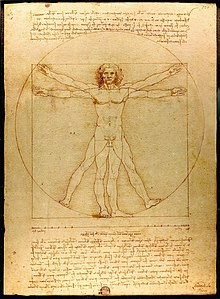

Renacimiento:
- El Renacimiento fue un movimiento artístico y cultural que tuvo lugar en Europa occidental durante los siglos XV y XVI.
- Su epicentro fue la ciudad italiana de Florencia.
- Se caracterizó por la recuperación de la tradición artística e intelectual clásica grecolatina.
- Los artistas renacentistas retomaron temas míticos griegos, romanos y bíblicos en sus obras.
- El Renacimiento marcó el tránsito del mundo medieval al mundo moderno.
- Hechos relevantes durante este período incluyen:
- Los viajes de exploración y el descubrimiento de América.
- La caída de Constantinopla, que llevó a la migración de cristianos bizantinos con conocimientos griegos a Europa occidental.
- La invención de la imprenta moderna por Johannes Gutenberg.
- La fundación de universidades en toda Europa.
Humanismo:
- El humanismo es una doctrina de pensamiento que puso énfasis en la existencia humana y la promoción del uso de la razón.
- Surgió a finales de la Edad Media y se centró en el ser humano como el centro de atención, en contraste con la visión medieval centrada en Dios.
- El humanismo renacentista sentó las bases del método científico.
- Hechos relevantes relacionados con el humanismo incluyen:
- La llegada al papado de Nicolás V y Pío II, importantes promotores del humanismo.